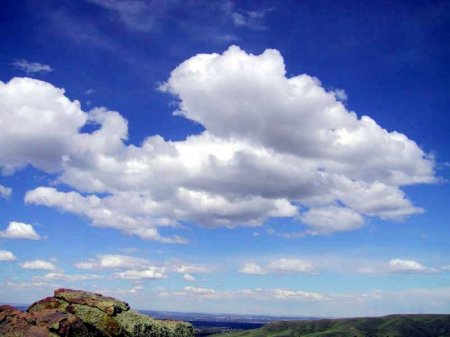
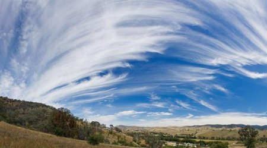
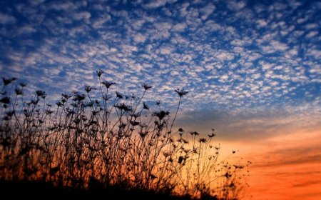

Вивчати хмари, та й просто спостерігати за ними люблять вчені, природознавці і мрійники. При вигляді того чи іншого небесного явища з'являється бажання назвати його «великим, важким або дощовим», але набагато цікавіше (і корисніше) було б використовувати наукову термінологію для більш конкретного опису.
Вперше повітряні німби (nimbus - хмара лат.) почав класифікувати англійський учений Люк Говард, і основними критеріями, якими він користувався, були висота ярусу, форма і, власне, прогноз їх створила. Види хмар вельми різноманітні і є цікавим предметом для колекціонування» і просто для спостереження. Знання про небесні зміни може бути відмінною темою для розмови як на світському прийомі, так і на простий вечірці. Крім усього іншого, всі нюанси, що стосуються зміни погоди, вкрай необхідні людям, які займаються екстремальними видами спорту типу плавання на човнах або скелелазіння. Види хмар, їх читання і аналіз допоможуть уникнути серйозної небезпеки і дізнатися про зміни кліматичних умов без додаткових метрологічних інструментів. Висота німбуса розповість про наближення шторму.Форма - про стабільності атмосфери.У сукупності ці фактори попередять про критичні зміни в погоді (град, сніг або дощ).Незважаючи на колосальне розмаїття і види хмар, класифікувати їх не так вже й складно, навіть за зовнішнім увазі.
Своїм зовнішнім виглядом вони нагадують тендітні ниточки або клаптики. Форма перистих хмар схожа на витягнуті пасма. Це одне із самих високих повітряних з'єднань в тропосфері приблизно від 5 до 20 км над рівнем моря в залежності від широти..
Перисті аномалії примітним тим, що вони можуть розтягуватися на кілька сотень кілометрів. Видимість всередині хмари досить невисока і коливається в межах 200-300 метрів. Це обумовлюється тим, що німбус складається з великих кристалів льоду, які швидко падаютьПеристі аномалії примітним тим, що вони можуть розтягуватися на кілька сотень кілометрів. Видимість всередині хмари досить невисока і коливається в межах 200-300 метрів. Це обумовлюється тим, що німбус складається з великих кристалів льоду, які швидко падають.Через поривчастий вітер ми спостерігаємо не чіткі вертикальні смужки, а викривлені химерним чином нитки перистих хмар. Такі зміни свидетельствовуют про наближення рясний дощ або антициклоні приблизно через добу.

Так само як і попередній вид, перисто-купчасті аномалії розташовуються у верхніх шарах тропосфери. Вони ніколи не дають опадів, але можна чітко сказати, що такі види хмар є провісниками грози та сильних злив, а іноді навіть і шторму. Ці нимбуси дуже часто називають «баранчиками» за їхню химерну форму у вигляді груп кульок і кіл. Висота нижньої межі хмар трохи нижче простих перистих і коливається в межах 5-9 км з протяжністю по вертикалі приблизно в кілометр. Видимість, на відміну від попереднього виду, значно краще - від 5 до 10 кілометрів. Цікавою особливістю перисто-купчастих видів є иризация, коли краю забарвлюються в райдужний колір, що виглядає дуже вражаюче і красиво.
Цей вид німбуса складається майже цілком з кристаликів льоду і його досить легко дізнатися. Він виглядає як однорідна плівка, заволакивающая небо. З'являється він після того, як «пішли» вищеописані види хмар. Взимку їх довжина може коливатися до 6 км, а в літній час - від 2 до 4 км.Видимість в межах самої аномалії вкрай маленька: приблизно від 30 до 150 метрів. Як і у випадку з попередніми видами, перисто-шаруваті потоки обіцяють швидку зміну погоди у вигляді дощів та грозових фронтів. Які види хмар передують дощу? Всі перисті нимбуси завжди рухаються попереду теплих повітряних мас, де дуже велика вологість, яка і є джерелом дощі зі зливами. Тому можна сказати, що всі перисті з'єднання – це передвісники поганої погоди. Навіть незважаючи на те, що аномалії поглинають сонячне і місячне світло, іноді можуть виникати дуже барвисті явища (гало) і з'являються рідкісні види хмар у формі світяться і блискучих кілець навколо світу місяця і сонця.
Своїм виглядом вони нагадують похмуро-сіру пелену, через яку лише зрідка проглядає сонячне світло. Високо-шаруваті сполуки розташовуються на висоті не більше 5 км над рівнем моря і мають протяжність до 4 км по вертикалі.Видимість в такому хмарі дуже маленька – 20-30 метрів. Складаються вони з кристаликів льоду і переохолодженої води. Ці аномалії можуть поливати невеликим дощем або снігом, але в літній час дощ просто не доходить до землі, тому ми помилково вважаємо їх не дощовими.
Ці сполуки можуть бути початком швидких злив. За своєю формою вони нагадують невеликі кульки, які збираються в окремі групи. Колірна гамма досить різноманітна: від білого до темного синього кольору. Дуже часто можна побачити химерні форми: хмара у вигляді серця, тварини, квітки і інших цікавих речей.Протяжність високо-купчастих хмар невелика і рідко досягає кілометра. Видимість, так само як і в шаруватих сполуках, невелика – 50-70 метрів. Розташовуються вони в середніх шарах стратосфери і віддалені від землі на 4-5 км. Крім дощових фронтів, можуть нести з собою похолодання.
Це види грозових хмар темно-сірого кольору з дуже «похмурим» характером. Вони являють собою суцільну хмарну пелену, якої не видно ні кінця ні краю, з постійно ллється дощем. Тривати це може дуже довгий час.Вони набагато темніше всіх інших шаруватих сполук і розташовані в нижній частині стратосфери, тому літають практично над землею (100-300 метрів). Їх товщина досягає декількох кілометрів і весь процес проходження фронту супроводжується холодним вітром і зниженою температурою.
Це найпотужніші нимбуси, які подарувала нам природа. Вони можуть досягати 14 км у ширину. Поява купчасто-дощової хмари – це гроза, злива, град і шквальний вітер. Саме ці аномалії і називають «хмарою».Іноді вони можуть вибудовуватися в цілу низку шквальних фронтів. Склад купчасто-дощових сполук може відрізнятися і залежить від висоти. Нижній шар складається в основному з крапельок води, а верхній - з кристаликів льоду. Розвивається цей вид німбів з шарувато-дощових побратимів і їх поява нічого хорошого передвіщати не може. Види опадів, що випадають з хмар, можуть бути досить різноманітними: дощові, снігові, круп'яні, крижані і игловие, тому краще перечекати негоду під дахом або в будь-якому іншому укритті.
Туман також відноситься до низколежащим з'єднанням. Він густий і вологий, а коли ви проходите через туманне хмара, ви можете відчути його вагу. Туман може з'явитися в місцях великого водного скупчення при слабкому вітрі. Дуже часто він виникає на поверхні озер і річок, але якщо піднімається вітер, туман дуже швидко розсіюється без сліду.